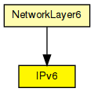
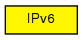

Implements the IPv6 protocol.
An overview of the IPv6 implementation in the INET Framework is provided here.
The IPv6 protocol header is represented by the IPv6Datagram message class.
Interfacing with higher layer protocols
To send a packet over IPv6 from a higher layer protocol, the module should fill in an IPv6ControlInfo object, attach it to the packet with cMessage's setControlInfo() method, the send it to the IPv6 module.
When IPv6 sends up a packet to a higher layer protocol, it will also attach an IPv6ControlInfo to the packet, with the source and destination IPv6 address, etc. of the IPv6 datagram in which the packet arrived.
IPv6 can serve several higher-layer protocols. When delivering packets to them, the output gate is determined from the Protocol field in the IPv6 datagram class. The protocol-to-gateindex mapping must be given in the protocolMapping string parameter, in the following format:
protocolnumber:gateindex, protocolnumber:gateindex, ...
The recommended setting is:
That is, protocolMapping="6:0,17:1,46:2,89:3"
Routing and interfacing with lower layers
The routing table is stored in the module RoutingTable6. When a datagram needs to be routed, IPv6 queries RoutingTable6 for the output interface (or "port") and next hop address of the packet. This is done by directly calling C++ methods of RoutingTable6. No message exchange with RoutingTable6 takes place.
Routing protocol implementations can also query and manipulate the route table by calling RoutingTable6's methods in C++.
Performance model, QoS
In the current form, IPv6 contains a FIFO which queues up IPv6 datagrams; datagrams are processed in order. The processing time is determined by the procDelay module parameter.
See also: RoutingTable6, IPv6ControlInfo, IPv6NeighbourDiscovery, ICMPv6
Author: Andras Varga
The following diagram shows usage relationships between types. Unresolved types are missing from the diagram.
The following diagram shows inheritance relationships for this type. Unresolved types are missing from the diagram.
| Name | Type | Description |
|---|---|---|
| NetworkLayer6 | compound module |
Represents an IPv6 network layer (L3). |
| Name | Type | Default value | Description |
|---|---|---|---|
| procDelay | double | 0s | |
| protocolMapping | string |
| Name | Value | Description |
|---|---|---|
| display | i=block/network2 |
| Name | Direction | Size | Description |
|---|---|---|---|
| transportIn [ ] | input | ||
| transportOut [ ] | output | ||
| queueIn [ ] | input | ||
| queueOut [ ] | output | ||
| icmpIn | input | ||
| icmpOut | output | ||
| ndIn | input | ||
| ndOut | output |
// // Implements the \IPv6 protocol. // // An overview of the \IPv6 implementation in the INET Framework is // provided <a href="ipv6overview.html">here</a>. // // The \IPv6 protocol header is represented by the IPv6Datagram message class. // // <b>Interfacing with higher layer protocols</b> // // To send a packet over \IPv6 from a higher layer protocol, the module should // fill in an IPv6ControlInfo object, attach it to the packet with cMessage's // setControlInfo() method, the send it to the IPv6 module. // // When IPv6 sends up a packet to a higher layer protocol, it will also attach // an IPv6ControlInfo to the packet, with the source and destination \IPv6 address, // etc. of the \IPv6 datagram in which the packet arrived. // // IPv6 can serve several higher-layer protocols. When delivering packets // to them, the output gate is determined from the Protocol field in the // \IPv6 datagram class. The protocol-to-gateindex mapping must be given // in the protocolMapping string parameter, in the following format: // <pre> // protocolnumber:gateindex, protocolnumber:gateindex, ... // </pre> // // The recommended setting is: // - \TCP (6) : 0 // - \UDP (17) : 1 // - \RSVP (46) : 2 // - \ICMPv6 (89) : 3 // // That is, <tt>protocolMapping="6:0,17:1,46:2,89:3"</tt> // // <b>Routing and interfacing with lower layers</b> // // The routing table is stored in the module RoutingTable6. When a datagram // needs to be routed, \IPv6 queries RoutingTable6 for the output interface // (or "port") and next hop address of the packet. This is done by directly // calling C++ methods of RoutingTable6. No message exchange with RoutingTable6 // takes place. // //#FIXME TBD describe operation // // Routing protocol implementations can also query and manipulate the route table // by calling RoutingTable6's methods in C++. // // <b>Performance model, QoS</b> // // In the current form, IPv6 contains a FIFO which queues up \IPv6 datagrams; // datagrams are processed in order. The processing time is determined by the // procDelay module parameter. // // @see RoutingTable6, IPv6ControlInfo, IPv6NeighbourDiscovery, ICMPv6 // // @author Andras Varga // simple IPv6 { parameters: double procDelay @unit("s") = default(0s); string protocolMapping; @display("i=block/network2"); gates: input transportIn[] @labels(IPv6ControlInfo/down,TCPSegment,UDPPacket); output transportOut[] @labels(IPv6ControlInfo/up,TCPSegment,UDPPacket); input queueIn[] @labels(IPv6Datagram); output queueOut[] @labels(IPv6Datagram); input icmpIn; output icmpOut; input ndIn; output ndOut; }